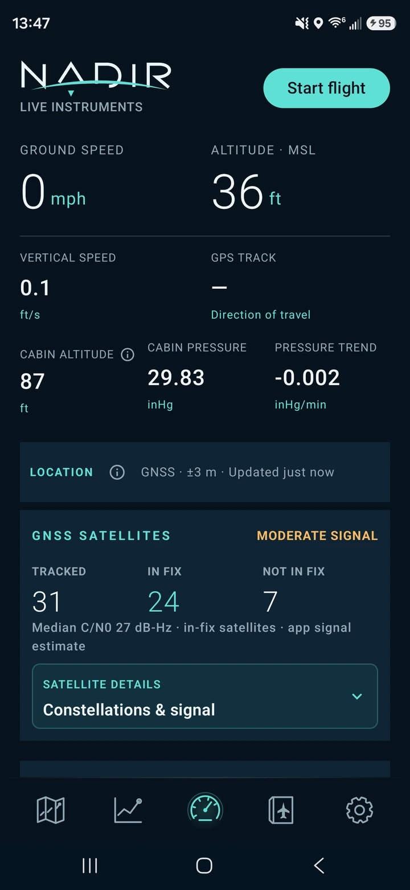
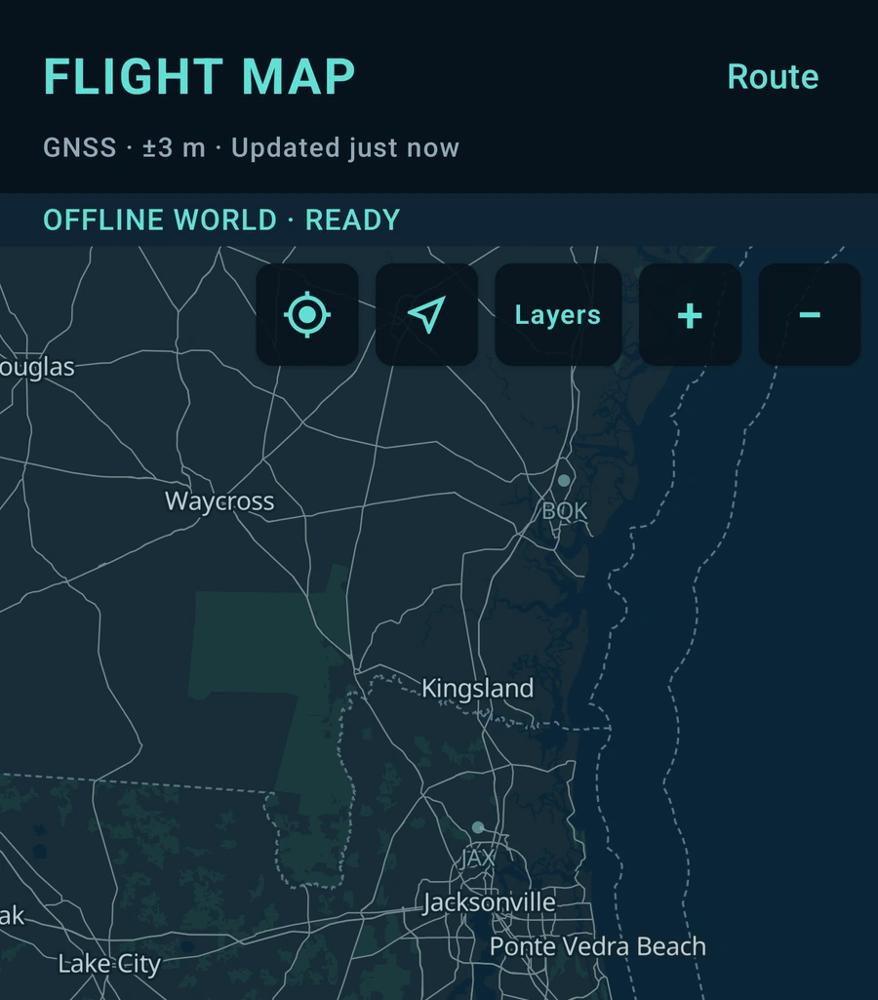

Position & movement
Follow the flight.
Read ground speed, GPS direction of travel, altitude and vertical speed. Altitude uses mean sea level when available and identifies its reference when it cannot.
Android · In development
A passenger flight companion that uses your phone's GPS and sensors to help you understand the journey. Follow your actual flight, explore offline maps and keep a record of the trip — even without aircraft Wi-Fi.
Built for the view from your seat. Readings depend on your phone's sensors and satellite reception.

01 / Live flight
How fast are we moving? How high are we? What is changing around us? Nadir brings the phone's readings together in a clear instrument view, with more context a tap away.
Position & movement
Read ground speed, GPS direction of travel, altitude and vertical speed. Altitude uses mean sea level when available and identifies its reference when it cannot.
Inside the cabin
On phones with a barometer, view cabin pressure, its trend and estimated cabin altitude. Cabin altitude describes pressure inside the cabin; it is different from the aircraft's height.
Signal & attitude
Check GNSS signal quality and satellites used in the fix. A sensor-based attitude indicator can be calibrated to the current surface, such as a tray table. Moving the phone changes that reference.
02 / Offline first
Nadir's core runs on the phone. A usable GPS fix can still provide live movement and position without internet, while stored maps and geographic data give the journey context.
GPS reception inside an aircraft varies. Missing satellite reception can interrupt readings and leave gaps in a recorded route; internet access does not guarantee a GPS fix.

03 / Follow the actual flight
Nadir records the positions your phone actually observes: departure turns, changes of course and the approach to your destination. That trace stays with the completed flight.
Recorded path
The recorded GPS track is separate from the airport-to-airport reference line. Color follows reliable recorded MSL altitude; unavailable or uncertain altitude stays neutral.
Progress & perspective
Check reference-route progress, distance flown and destination estimates. The reference is a geographic guide, not an airline's filed flight plan; arrival estimates depend on current observations.
Record your way
Manual recording works without selecting airports. With automatic detection enabled, keep the app open until takeoff is confirmed. Recording can then continue in the background, and completed automatic flights wait for your review.
04 / Weather & aviation context
Explore nearby airports, local and destination time, and sunrise and sunset estimates. Add precipitation, satellite cloud imagery, weather advisories and pilot reports when the relevant data is available.
AviationWeather.gov supplies aviation reports; LibreWXR supplies weather imagery. Optional ADSB.lol aircraft information stays distinct from your phone's own measurements.
Weather coverage varies. Cached images describe previously retrieved areas and times, and the precipitation outlook is experimental. Missing reports do not mean clear conditions.
Deeper when you want it
Keep the everyday view simple, then open the details that interest you:
These are passenger and enthusiast tools. The airspace layer is not a legal boundary determination or an air traffic control map.
05 / After landing
Flight history
Reopen completed flights with their actual route maps, observed phases, milestones and statistics. History is stored on the phone and stays available without a connection.
Live & completed trends
Explore altitude, speed, vertical speed, pressure, cabin altitude and GPS turns. Hold and drag through recorded samples or use the accessible slider to inspect a specific moment.
Your records
Export a completed flight as JSON, CSV or GPX to a destination you choose. Exports can contain precise locations and timestamps, so share them thoughtfully.
Before you fly
Open Settings → Offline Maps, prepare the regions or route you need and check that the downloads are ready before leaving your connection. The bundled overview works without those detail packs. Weather images are cached only for retrieved coverage, not for every place you might fly over.
Grant location permission and check GNSS status. The cabin, your seat and the phone's antenna affect reception. Some phones have no barometer or suitable attitude sensors. Nadir shows unavailable or uncertain data rather than treating it as a valid reading. Follow your airline's device instructions.
Open Flights to review, export or delete completed recordings. Manage downloaded maps separately in Settings → Offline Maps. Deleting a map pack does not delete flight history, and deleting a flight does not remove copies you have exported. Read Nadir privacy & data for more detail.
Android / In development
Nadir is in development for Android. Public release information will appear here when it is available.
Nadir is informational, not certified navigation equipment. It must not replace official aviation instruments, navigation products, crew guidance or safety decisions.